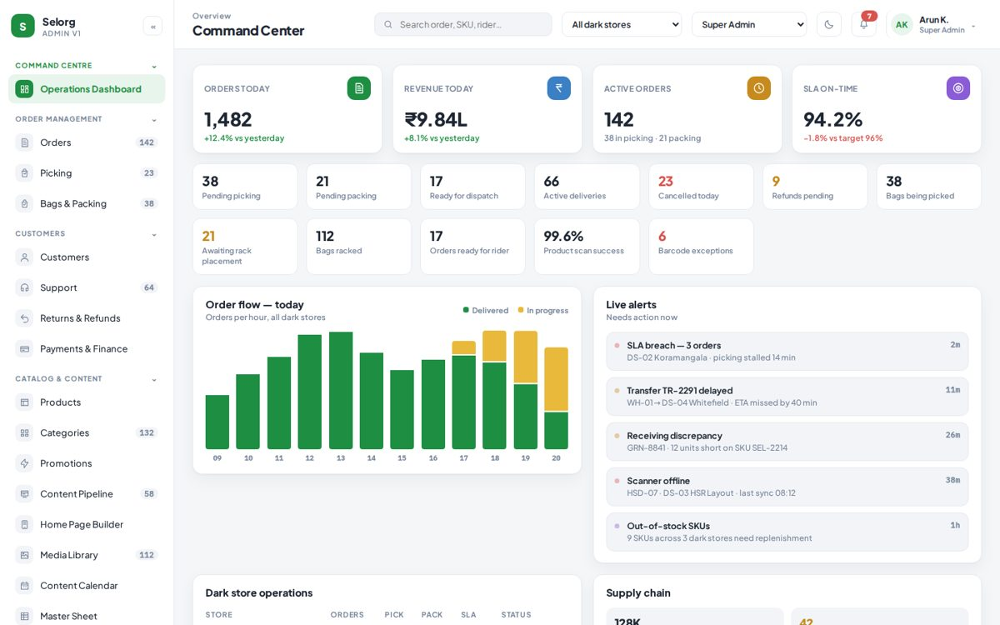
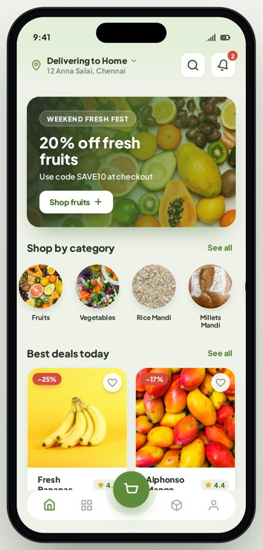
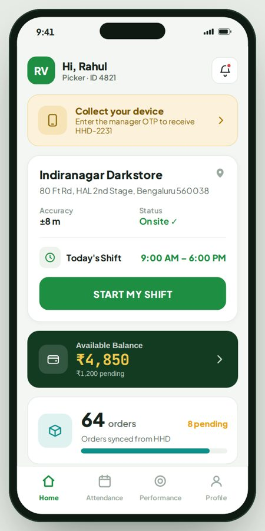
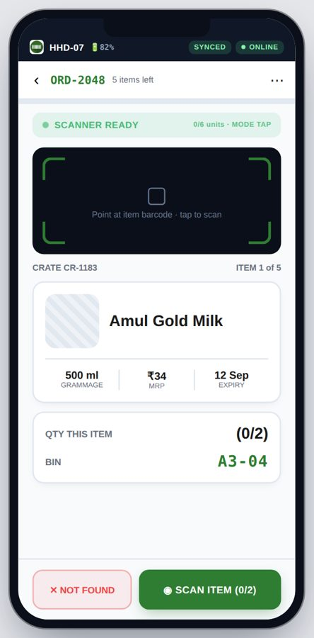

Organic grocery · Dark-store operations
Selorg
An organic grocery and delivery business run from dark stores. Four connected apps share one backend: customers order, pickers pack, handheld scanners verify every item, and an admin console runs the warehouse, stores and riders.
Selorg Admin Dashboard
A role-based command centre for warehouse, dark stores, pickers and riders. Eight roles, from Super Admin to Catalog Manager, each see only their scope, behind two-factor sign-in and an audit log.
- Live order flow, SLA tracking and an alert feed for stalled picks and delayed transfers
- Store and warehouse inventory, goods requests, receiving, putaway and transfer approvals
- Rider and picker approvals, rosters, earning rules and payout runs
- Catalog, promotions, home-page builder and content pipeline

Selorg Customer App
A mobile shopping app for fresh produce, millets, dairy and groceries. Customers sign in with a phone, WhatsApp or email code, or browse as a guest.
- Category browsing, search, offers and best-deal shelves
- Cart with coupons and tip; pay by wallet, UPI, card or net banking
- Order tracking from confirmed to delivered, plus cancellations, returns and refunds
- Rider chat, support tickets and saved addresses, with loading, empty and error states designed

Selorg Picker Pro
A workforce app for warehouse and dark-store pickers, covering the full journey from application to payout.
- Onboarding with Aadhaar and PAN checks, face verification and bank details
- Shift selection, device collection with a manager code, and location-checked check-in
- Attendance, overtime, weekly earnings and incentive tracking
- Clear states for under review, approved, rejected, blocked and suspended accounts

Selorg HSD Scanner
A handheld scanner flow for the pick floor, built for speed with gloves on and unreliable signal.
- Scan the bag QR, then follow the pick list item by item
- Scan outcomes for good, invalid, duplicate and rejected items, with a not-found path
- Bag photo check and delivery-rack scan to close each order
- Offline queue with sync retry, plus low-battery and session-expiry handling
